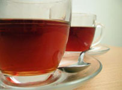

Tea and Beauty
|  |
Tea can also be a part of your beauty treatment in your home apart from expensive parlors and artificial applications. Indian Tea can be used for various purposes in your routine life. One should use this finger tips to enhance inner as well as outer beauty.
Brew 1/2 cup of unscented black or green tea leaves in approximately a litre of boiling bottled water for at least 10 minutes. Strain and set aside. Cool the filtrate and refrigerate. Use this solution to soothe sunburns.
For minor cuts and scrapes, apply the cold tea brew with a pure cotton pad onto the cuts or abrasions. Leave the cotton pad on the affected area for at least 5 minutes. Do not wash off. Apply this 4 times and day and see the difference.
Apply a piece of cotton cloth that's been soaked in the cold tea brew to the sunburned area. Leave on until the affected areas cool off. Repeat this 3-4 times a day.
To remove puffiness from eyes, soak cotton pads in the cold tea brew and keep the pads on your lids for about 10 minutes. Refrigerated used tea bags are another alternative.
In case you have had a rough day, soak your feet in the cold tea brew for about 15 minutes. This is a great way to treat your feet after a long day of standing, walking, or running. For an aromatic soak, you can use flavoured tea brews.
For a face scrub, mix 1 teaspoon of fine cornmeal or oatmeal with cooled chamomile tea brew. Apply on face and neck. Rub off gently when dry. This scrub is not recommended for sensitive skin.
Another exfoliating paste would be using chamomile tea brew with powdered milk. Rub gentle and wash with warm water when dry.
Rinse your face with brewed tea solution. Tea acts as an astringent, so it works well on pimples.
Tea is a natural source of fluoride which helps to strengthen and protect teeth from tooth decay and gum disease. Drink tea and you will have fewer visits to the dentist.
| ITEM | ANTIOXIDANT |
| TEA | 927 |
| GREEN TEA | 814 +/- 30 |
| SPINACH | 129 + / - 6 |
| BEETS | 81 +/- 25 |
| LEAF LETTUCE | 49 + / - 7 |
| CAULIFLOWER | 46 + / - 11 |
| GARLIC | 46 + / - 9 |
| ONION | 40 + / - 2 |
| CABBAGE | 32 + / -2 |
| CARROT | 26 + / - 8 |
| CORN | 22 + / - 4 |
| POTATO | 15 + / - 5 |
| CUCUMBER | 15 + / - 2 |
| SWEET POTATO | 14 + / - 2 |
back to home